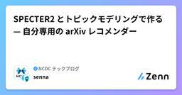
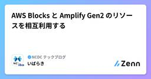
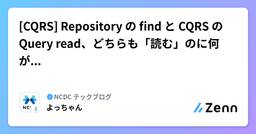

NCDC テックブログのフィード
https://zenn.dev/p/ncdc
NCDC株式会社( https://ncdc.co.jp/ )のテックブログです。 主にエンジニアチームのメンバーが投稿します。 募集中のエンジニアのポジションや、採用している技術スタックの紹介などはこちら( https://github.com/ncdcdev/recruitm
フィード

SPECTER2 とトピックモデリングで作る — 自分専用の arXiv レコメンダー
NCDC テックブログのフィード
TL;DRarXiv の新着を毎朝、自分の興味に寄せて並べ替えて届ける個人用の仕組みを作って、数ヶ月回した論文の abstract を SPECTER2（論文特化の埋め込みモデル）でベクトル化して、似た論文同士が近くに集まる空間を作る月次で 1 万本の論文を トピックモデリング（BERTopic） にかけて、数十個のクラスタに分けた「トピックマップ」を生成する自分が星をつけた論文と、自然言語で書いた興味プロファイルの両方を使って、α-blend というスコアでマップ上のクラスタをランク付けする上位クラスタから「おすすめ」、その少し下のクラスタから「こんなのもどう？」を出...
4日前

AWS Blocks と Amplify Gen2 のリソースを相互利用する 1
1
NCDC テックブログのフィード
はじめにこの記事の続編です。https://zenn.dev/ncdc/articles/bb8ffdd1a874ea前回の記事に引き続き、Amplify Gen2 と AWS Blocks を触り、一緒に使えるかを検証していきます。 前回の記事の整理AWS Blocks は、Amplify Gen2 と「補完」関係にあるAmplify Gen2 で便利なコンソールやホスティングやCI/CD と、AWS Blocks ならではの IfC や完全ローカル実行は、共存できるそのためには、AWS Blocks にバックエンドのリソースを寄せて、Amplify Gen2 の...
5日前
CDK で AWS Alarm を Slack と連携する
NCDC テックブログのフィード
概要CDKを使ってAWSのリソースを監視するリソースを作るにあたり自分のメモとして主題のことをまとめました。以下はCDKを使ってAWSリソース監視をSlack連携させるためにやったことですChatbotにSlack送信設定の作成Cloudwatch Alarm, Cloudwatch Metricの作成リポジトリ: https://github.com/kazuki-inoue202208/iot-observability 前提条件AWS CDK（v2）がセットアップ済みSlackワークスペースの管理者権限がある Step 1: Slack の ...
6日前

[CQRS] Repository の find と CQRS の Query read、どちらも「読む」のに何が違うのか
NCDC テックブログのフィード
最初に実務でDDD と CQRS を組み合わせた環境で設計、実装をしていると、「読み取り」を担う場所が2つ出てきます。Repository の findCQRS の Query サービスどちらも「DBからデータを取ってくる」処理に見えるので、「じゃあ一覧取得もとりあえず Repository に書けばいいか」となっていた頃がありました。ただ、使い分けを意識せずにいると、Repository が徐々に膨らんで findByUserIdAndStatusOrderByCreatedAt みたいなメソッドが増殖していく経験をした方もいるんじゃないでしょうか。（いやいないだ...
7日前

AWS の新IfCツール「AWS Blocks」は 、Amplify Gen2 と「補完」関係にあるのか？
NCDC テックブログのフィード
はじめに「AWS Blocks」というAWSサービスが登場しました。2026年6月16日にパブリックプレビューが公開された IfC（Infrastructure from Code）と呼ばれるカテゴリのツールです。この記事では、AWS Blocks を触ったり、Amplify Gen2 と比べたりしながら、どう活用できそうかを探っていきたいと思います。ですが、その前に、まずは「IfC」とはなにか?「AWS Blocks」とは何か?を整理しておこうと思います。 IfC（Infrastructure from Code）とはすっかり定着した IaC（Infrastructur...
8日前
[Claude Code] SkillとPluginが内部でどう読み込まれているのか、実際のファイルを覗いてみた
NCDC テックブログのフィード
最初にClaude Codeを使っていると、SkillやPluginという言葉が頻繁に出てきます。/plugin install でインストールすると何もしなくても動くし、~/.claude/skills/ にファイルを置くだけで認識される。便利なんですが、「これ実際どういう仕組みになってるんだろう？」と気になって、実際のキャッシュディレクトリやPlugin配布リポジトリのファイル構造を直接確認しながら調べてみました。!本記事の冒頭はSkillとPluginの基本的な説明も含まれているため、必要に応じて適宜飛ばし読みしていただければと思います。では始めます。 まず...
15日前
Amplify Gen2 × AgentCore は、相性が良さそうで良くない。けど頑張ってくっつけてみた。
NCDC テックブログのフィード
はじめに現在、AWSでAIエージェントを作るならAmazon Bedrock AgentCoreが最初の候補に挙がるかと思います。しかし、エージェント単体ではユーザーに届きません。実際に使ってもらうには、ログインしてチャットできるWebアプリくらいは必要になります。AWSでモダンなWebアプリを作るならAmplify Gen2が定番です。となると「Webアプリ部分はAmplify Gen2、AIエージェント部分はAgentCore」という組み合わせは、いかにも相性が良さそうに見えます。しかし、実はこの2つは相性はそれほど良くありません。具体的には、Amplify Gen2のCI...
15日前
「生成AIで属人性を解消」には、違和感を感じる。
NCDC テックブログのフィード
生成AI系のセールストークで、こんな主張をよく見かけます。「生成AIで属人化を解消します」「生成AIで誰でも同じ品質が出せるようになります」聞くたびに違和感があったので、その理由を整理してみます。 そもそも属人化は悪いことか「属人化＝悪」という前提で語られることが多いですが、本当にそうでしょうか。属人化をリスクとして語る論拠は、担当者離脱リスク・品質のばらつき・引き継ぎ困難などです。しかしこれはリスク管理の問題であって、属人化そのものが悪いわけではありません。むしろ属人化は、競合に模倣できない競争力の源泉です。管理すべきは「属人化しているかどうか」ではなく「その属人化...
19日前
DynamoDBには集計系のクエリがないけど、なんとかしたい
NCDC テックブログのフィード
はじめに本記事は、JAWS-UG彩の国埼玉支部 #8 彩の国埼玉支部 1周年（2026年5月30日開催）で登壇した内容を記事にまとめたものです。自分用に作った英語学習ツールを題材に、DynamoDB での集計をどう実現したかを整理します。DynamoDB には集計系のクエリはないですが、なんとかできる部分もあるよという話です。※そもそもリレーショナルデータベースを選んだ方がいい場合は多々あるため、1つの事例として読んでいただけると幸いです。 想定読者RDBは知っているがDynamoDBは初めてという方 DynamoDBとはDynamoDBはAWSが提供するサー...
1ヶ月前
CodexをAmazon Bedrock経由で使う
NCDC テックブログのフィード
!この記事の手順は Claude Code や Codex などの AI エージェントに渡して「この記事を読んで設定して」と伝えれば、そのまま実行できることを目指して書いています。ついにAWSでもCodexが使えるようになりましたね！https://openai.com/index/openai-frontier-models-and-codex-are-now-available-on-aws/Codex CLI は --profile オプションを使うことで Amazon Bedrock 経由で動かすことができます。本記事では、AWS 認証に aws login を使いな...
1ヶ月前
生成AIのストリーミングは、なぜ1回のAPIコールで複数回値が取れるのか
NCDC テックブログのフィード
モチベーションChatGPTやClaudeを使っていると、文字がポロポロと表示されます。あれを見てふと気になりました。あの動き、裏で何度もAPIを叩いているのだろうか？調べてみると答えはNoでした。HTTPリクエストは1回だけで、レスポンスが分割されて少しずつ届くのが「ストリーミング」です。本記事では、ストリーミングが通信レベル・コードレベルでどう動いているかを整理してみます。Amazon Bedrock（Claude）のPython SDKを使いますが、仕組み自体はOpenAI APIなど他のサービスでも同じです。 非ストリーミングまず、ストリーミングを使わない場合で...
1ヶ月前
PostgreSQL の JSONB を NoSQL と比べながら使ってみた
NCDC テックブログのフィード
PostgreSQL に JSONB という型があるらしいと聞いて、どんなものか気になったので試してみました。せっかくなので MongoDB と同じクエリを書き比べてパフォーマンスも計測しています。 まず JSONB ってなに？PostgreSQL には JSON を格納する型が 2 つあります。型中身特徴JSONテキストをそのまま保存読み出すたびにパースJSONBバイナリに変換して保存読み出し時のパース不要・インデックス対応JSONB は書き込み時に一度だけパースして、バイナリ形式で保存します。その分書き込みはわずかに遅いですが、検...
1ヶ月前
GitHub Code QualityのCode coverage機能を試す
NCDC テックブログのフィード
!この記事は、Code Qualityのpublic preview中に無料で試しましたが、2026/07/20に正式リリースとなり、それ以降は1人あたり$10/月の費用が発生します。また、スキャン時にGitHub Actionsの実行時間を消費します。料金や仕様は今後も変更される可能性があります。最新の課金体系については公式ドキュメントをご確認ください。 はじめにGitHubのネイティブな機能にCode coverageが追加されました。https://github.blog/changelog/2026-05-26-code-coverage-in-pull-requ...
1ヶ月前
サイドバーデザインで考える奥行知覚
NCDC テックブログのフィード
サイドバーとメインエリア、どっちが手前？サイドバーのデザインとして、次の画像のように2カラムの横並びの場合を考えます。サイドバーとメインエリア、どちらが手前に見えますでしょうか？人によるかもしれませんが、色がはっきりしているサイドバーのほうが手前に見えるように思えます。 メインエリアがサイドバーに入り込む少しだけデザインを変更して、サイドバー上の選択された項目に、メインエリアの背景色が入り込むようにします。この場合、メインエリアが手前に見えてきませんでしょうか？ サイドバーが浮くさらに変更して、サイドバーがメインエリアに浮いているデザインにしてみます。この...
1ヶ月前
SMS送信の仕組みと2段階認証で使われる理由
NCDC テックブログのフィード
はじめにSMSは、電話番号を指定してメッセージを送る技術です。Short Message Serviceの略称となります。昨今はアカウントにおけるセキュリティ強化のため、2段階認証（MFA）が導入されているサービスも多くなっています。SMSは、2段階認証においてもよく用いられている方法です。この記事では、SMSが送信できる仕組みについて取り上げます。また、SMSがなぜ2段階認証で用いられているのかを記述していきます。 どのように送信されるのかSMSの送受信に関わるのは3者です。1つ目は送信サービス、2つ目はSMSC、3つ目は送信先の電話番号を持つ受信デバイスです。...
1ヶ月前
PostgreSQLのjsonb型で空値を検索する
NCDC テックブログのフィード
業務でpostgresのjsonb型を利用した検索機能を作成するにあたって、引っかかったところをまとめておきます。 想定しているデータ下記のようなjsonb型の列を持つテーブルに対して検索処理を行うパターンを想定します。概ね構造は一致していますが、keyがnullやundefined、空の配列が混在しています。CREATE TABLE book ( id serial PRIMARY KEY, json_data jsonb);INSERT INTO book (json_data)VALUES ( '{ "title": "人間...
2ヶ月前
画像のリサイズ関数の裏側では何が起きている？~補間アルゴリズムの違いを知ろう~
NCDC テックブログのフィード
普段何気なく使っていた画像リサイズ系のライブラリ関数。option指定できる"補間アルゴリズム"の違いを意識できておらず、要件に対してテスト結果が引っかかることがありました。「意識せずデフォルト設定のままで画像リサイズ等の加工処理を実行すると、UXやサーバーコスト、学習・推論精度などに影響を及ぼす可能性がある」ってことを理解して適切に使い分けれるようになりましょう。（自戒） 前提・背景ライブラリによる画像データのリサイズ処理は、内部的には"補間アルゴリズム"が動いています。「ライブラリ関数の内部的にいい感じに対応してくれる」ことはありがたいが、「知ってて任せるのと、知らずに...
2ヶ月前
潜在拡散モデルの仕組み
NCDC テックブログのフィード
はじめに2026年現在の画像生成モデルは、潜在拡散モデルをベースに進化を続けています。この記事では、潜在拡散モデルの仕組みを、内部で使われている3つのAIモデルごとに解説します。なお、数式は含んでおりませんが、一部数学用語を用いています。CLIP拡散モデル変分オートエンコーダ データ形式モデルの説明に入る前に、AIモデルが扱うデータ形式について取り上げます。 ベクトルベクトルとは、簡単に言うと数値データです。次元ごとに数値が保持されています。例えば、3次元空間の場合は(1, 2, 3)のように、3つの値が保持されています。AIモデルが扱うデータは、基本...
2ヶ月前
RAGのRetrieve戦略 — Adaptive RAGの変遷
NCDC テックブログのフィード
Adaptive RAGとはAdaptive RAG（または Adaptive Retrieval）は、retrieve するタイミング・回数・戦略をクエリやモデル状態に応じて動的に変えるRAG手法群を指す総称です。素朴なSingle-step RAGが抱える構造的な問題に対応するための手法です。Skill-RAG という論文で「検索がうまくいかなかった時に、失敗の原因を見分けて対処を切り替える」という新しいRAGのretrieve戦略が提案されていて、そもそも今までどんな手法があったのかと気になり、SKR / FLARE / DRAGIN / Self-RAG / CRAG ...
2ヶ月前
1時間で料理バトルAIエージェントを作ってみた
NCDC テックブログのフィード
AIエージェントがどういう仕組みで動いているのか勉強したかったので、作ってみました。GPTsやDifyを使えばサッと作れるらしいのですが、今回は仕組みを理解したかったのでスクラッチ(LangGraph)で作りました。 完成物最終的に、AI同士の料理バトルAIエージェント(エンタメ)を作ることができました。所要時間としては、要件定義 → 設計 → 実装までトータルで1時間ほどです。主にGeminiとCursorに動いてもらいました。ユーザーが食材を複数入力し議論開始すると、錬金術師(Alchemist)と会計士(Accountant)がレシピに関する意見を出します。錬金術師は...
2ヶ月前